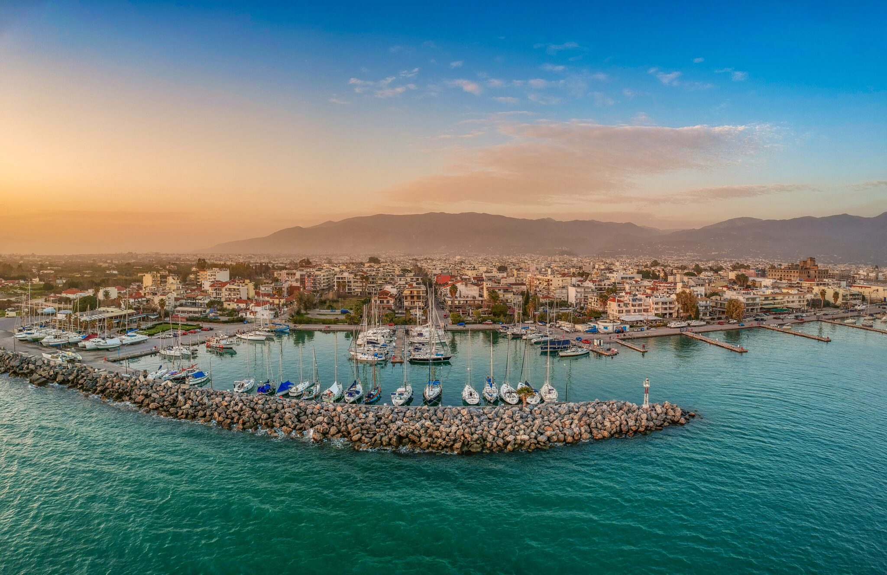
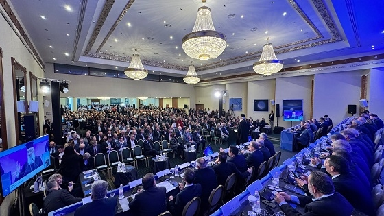
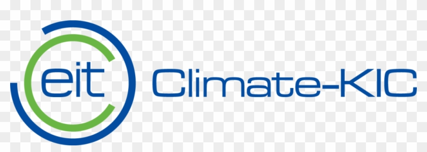
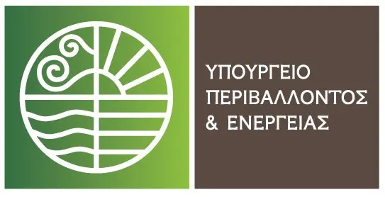

First National Ecosystem Event – Kalamata
The first national event will take place alongside the KEDE annual conference. That means most of the people we want in the room will already be there.
Read more →Supporting the six Greek Mission Cities: Athens, Thessaloniki, Ioannina, Kalamata, Kozani, and Trikala, in moving from Climate City Contracts to implementation.
This is the official hub for the Greek National Platform for Climate Neutral Cities. Here you'll find updates on the two national events, preparatory consultations, and resources for municipalities working towards climate neutrality by 2030.
The project is part of NetZeroCities (SGA2 Task 1.6 – Sub-European Peer-to-Peer Collaboration), funded by Horizon Europe and coordinated by Climate-KIC, with R-Cities as Country Coordinator for Greece and SMR Consultants as local contractor.
We bring together mayors, ministry officials, bankers, and engineers – because climate neutrality doesn't happen in silos.

The first national event will take place alongside the KEDE annual conference. That means most of the people we want in the room will already be there.
Read more →
Two online/hybrid meetings will shape the agenda of the first national event. Municipalities, ministries, and financiers are invited to contribute.
Read more →The Detailed Workplan 2026 and the Brief Baseline Report have been submitted to NetZeroCities partners for approval.
Read more →The project brings together Mission Cities, national authorities, financial institutions, industry, academia, and civil society.



